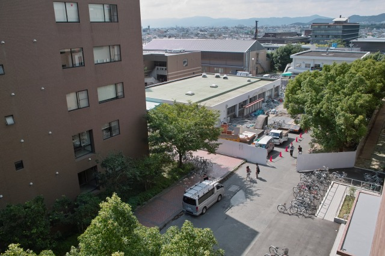
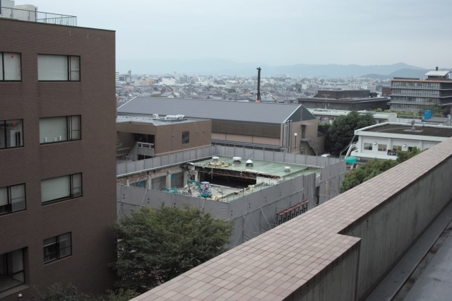
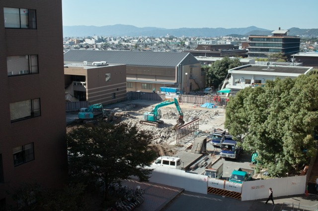
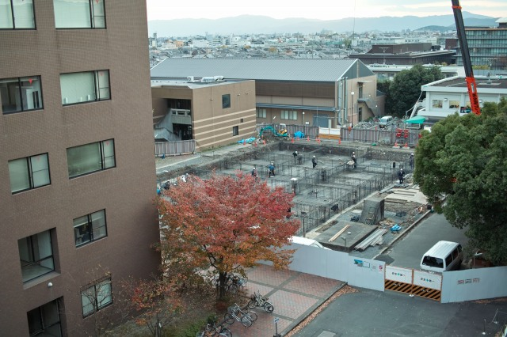
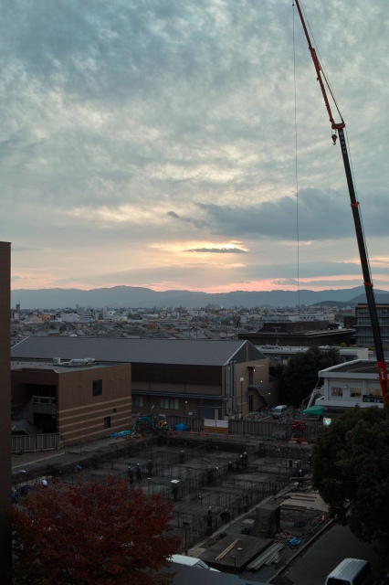
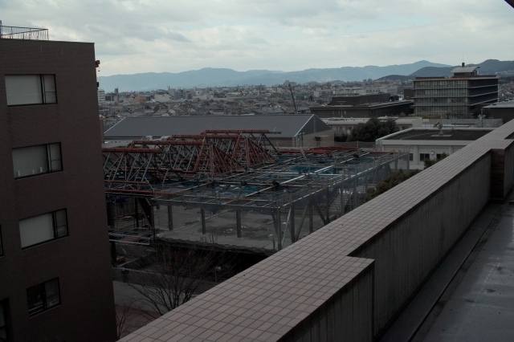
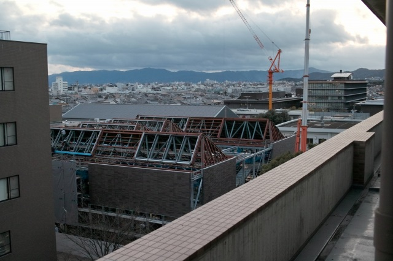
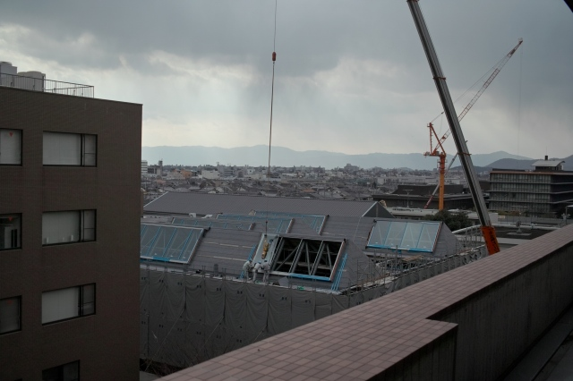
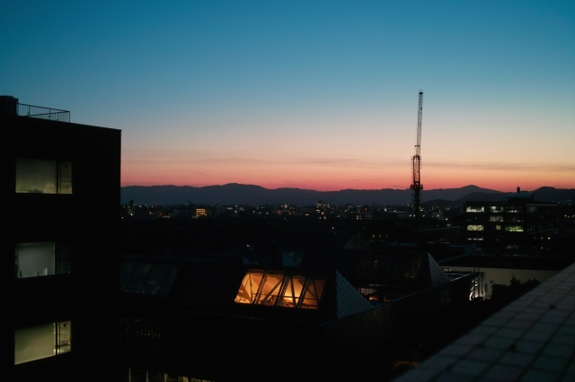
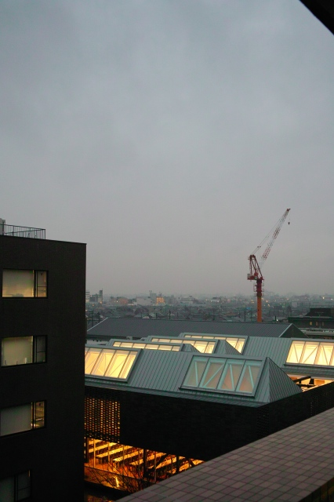

| ・ 準定点観測(H21.10.01〜H22.04.01) | |||
半年かけた超大作！食堂がKIT HOUSE（学生食堂）に変るまでを準定点観測してみました． |
|||
|

まずは古いのを壊します(09.10.01)． |

鉄骨が見えてますね(09.10.07)． | ||
|

30年近く建っていても壊すのはすぐ(09.10.21)． |

基礎工事が始まりました(09.11.15)． | ||
|

夕暮れですがまだまだ終わりません(09.11.15)． |

2階建てなのが良く分かります(10.01.05)． | ||
|

外壁が出来ました．パネルは早い(10.01.05)． |

ガラスが入ったらあとは内装(10.02.02)． | ||
|

内装工事は外から見えません(10.02.13)． |

本日開店！(10.04.01)． | ||